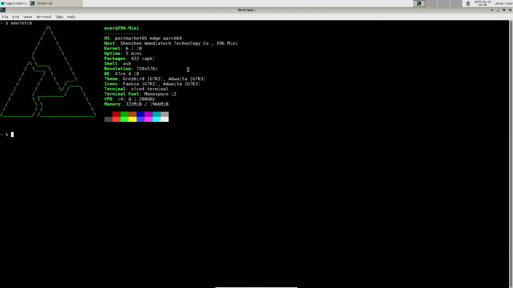

Amediatech X96 mini (amediatech-x96-mini)
Jump to navigation
Jump to search
|  | |
| Manufacturer | Amediatech |
|---|---|
| Name | x96 mini |
| Codename | amediatech-x96-mini |
| Released | 2017 |
| Category | testing |
| Original software | Android |
| Original version | 7 |
| Extended version | 11 |
| Hardware | |
| Chipset | Amlogic S905W |
| CPU | Quad-core 2 GHz Cortex-A53 |
| GPU | Mali-450 MP |
| Display | HDMI |
| Storage | 16GB/8GB |
| Memory | 1GB/2GB |
| Architecture | aarch64 |
{kind=link}
| USB Networking | |
|---|---|
| Flashing | |
| Touchscreen | |
| Display |
Works
|
| WiFi |
Broken
|
| FDE | |
| Mainline |
Works
|
| Battery |
Unavailable
|
| 3D Acceleration |
Works
|
| Audio |
Partial
|
| Bluetooth |
Broken
|
| Camera |
Unavailable
|
| GPS |
Unavailable
|
| Mobile data | |
| SMS | |
| Calls | |
| USB OTG |
Unavailable
|
| NFC |
Unavailable
|
| Accelerometer |
Unavailable
|
|---|---|
| Magnetometer |
Unavailable
|
| Ambient Light |
Works
|
| Proximity | |
| Hall Effect | |
| Barometer | |
| Power Sensor | |
| Camera Flash |
Unavailable
|
|---|---|
| Keyboard | |
| Touchpad | |
| USB-A | |
| HDMI/DP | |
| Ir TX |
Unavailable
|
| Ir RX | |
| Stylus | |
| Haptics | |
| Ethernet | |
| FOSS bootloader | |
Contents
Contributors
Users owning this device
How to enter flash mode
Installation
LEDs
x96 mini use a led that has 3 pin (blue+ pin, GND ,red+ pin).The red pin is connected to the 3v vcc which mean the led will be red when the box connected to the power.The blue pin is connect to the gpio and it is configed to be powed whwn linux boot up Therefore the led will turn into blue when linux booted up.
How to manually stop the blue pin from be powered :
# echo 0 > /sys/class/leds/x96-mini:blue:power/brightness
How to manually power the blue pin :
# echo 1 > /sys/class/leds/x96-mini:blue:power/brightness
How to root the device
The command su might only available for adb user. |
It come with root by default.
UART
{kind=link}
baud rate : 115200 , volt: 3v
The stock Android will you a shell that is run at root.
How to wipe the stock U-Boot
| This has only tested with the stock Android 7. |
- Connect to to it via UART
- Wait until it boots
- Run AS ROOT
# dd of=/dev/block/mmcblk0boot0 if=/dev/zero
Gallery
Mainline uboot
{kind=link}
See also
- pmaports!3985 Initial merge request